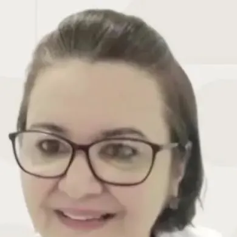

- Início
- Especialidades
- Reabilitação orofacial
Reabilitação orofacial
Fonoaudiologia no pós-cirúrgico da ortognática
A fonoaudiologia ajuda na reorganização das funções orais depois da cirurgia e na recuperação da mastigação, da fala, da respiração e da deglutição. No Jardim Panorama, em Ipatinga.
Quando procurar
Quando a reabilitação orofacial entra
A cirurgia muda a posição dos ossos da face, e a musculatura da boca precisa reaprender a trabalhar nessa nova posição. Alguns motivos para procurar a fono:
- Depois da cirurgia ortognática, na correção da mandíbula ou da maxila
- Dificuldade para mastigar ou engolir depois da cirurgia
- Fala diferente ou cansativa no pós-operatório
- Respiração pela boca que continua depois da cirurgia
- Rigidez ou pouca força nos movimentos da boca e do rosto
- Indicação do cirurgião ou do ortodontista
O momento de começar e a conduta são definidos na avaliação, junto com as orientações da equipe que fez a cirurgia.
Como é o atendimento
Uma recuperação acompanhada de perto
Avaliação
Mastigação, deglutição, fala, respiração e sensibilidade da face, com as orientações da cirurgia em mãos.
Plano de reabilitação
Exercícios e recursos indicados para cada fase da recuperação.
Sessões e exercícios em casa
O acompanhamento na clínica e o que fazer entre uma sessão e outra.
A reabilitação começa no cuidado contínuo.
Quem atende
Quem atende

Rita de Cássia
Fonoaudióloga · reabilitação orofacial · CRFa 15299
Graduada pela UNILUS/SP e especialista pelo CEFAC/SP. Certificações:
- Eletroestimulação
- Fotobiomodulação com laser de baixa potência
- Tapping
- Ultrassom terapêutico
Dúvidas
Perguntas frequentes
Quando começar a fono depois da cirurgia?
O momento é definido junto com a orientação do cirurgião. Vale entrar em contato antes da cirurgia para deixar o acompanhamento combinado.
Atende só a cirurgia ortognática?
O foco é a reabilitação orofacial no pós-cirúrgico. Para outros casos, conte o seu na mensagem e a recepção confirma.
O que levar na avaliação?
Os laudos e as orientações da cirurgia, se tiver, e a carteirinha do convênio.
Atende pelo convênio?
A clínica atende por convênio e particular. A cobertura varia de plano para plano: a recepção confirma a do seu ao agendar.
Na mesma clínica
Outras especialidades
A reabilitação começa no cuidado contínuo.
Mande uma mensagem contando a data da cirurgia, se já foi feita. A recepção confirma horário e convênio.